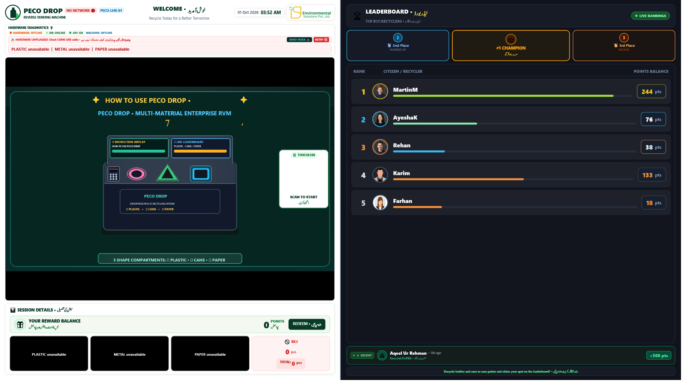
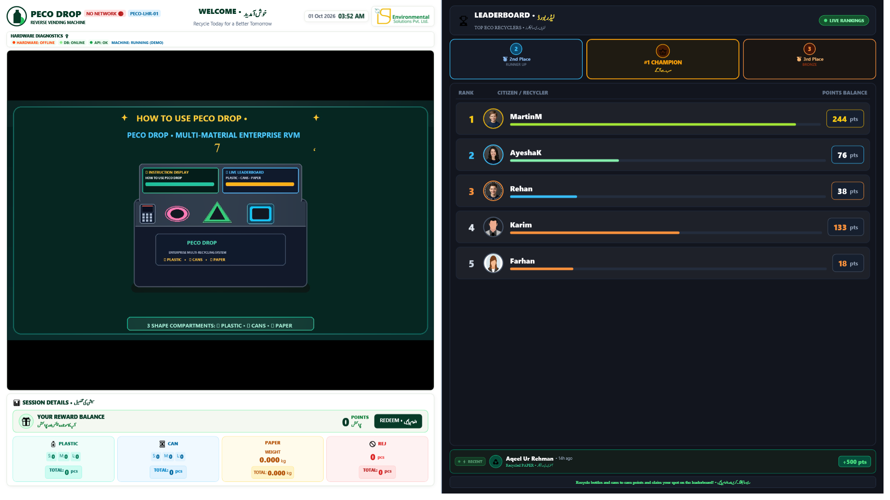
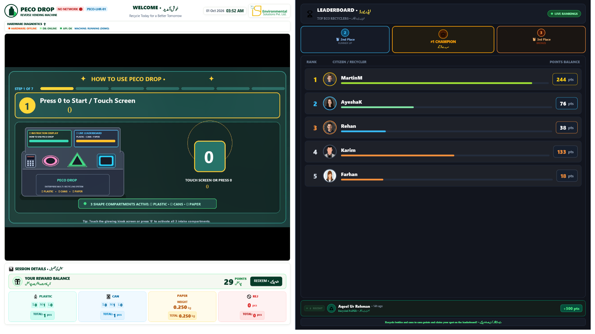

ISP Environmental Solutions Pvt. Ltd.
Manufacturer • Enterprise Smart Recycling Systems
PecoDrop
Operator & Employee User Manual
Enterprise dual-display kiosk operation for employee authentication, material deposits, corporate rewards and safe daily care
Manufactured by: ISP Environmental Solutions Pvt. Ltd.
Product family: ISP PecoDrop Enterprise Recycling Kiosk
Application: PecoDropDesktopApp
Environment: Corporate campuses, offices, factories and universities
Physical system: Dual landscape displays, optical QR scanner, digital keypad and three illuminated shape intakes
Edition: 1 October 2026
1. System identity
PecoDrop is the enterprise/corporate recycling kiosk. One landscape display presents video and instructions; the other provides the interactive kiosk workflow and live corporate leaderboard. Employees authenticate by QR or approved keypad flow, recycle into the matching shaped intake, and receive organization-linked rewards and environmental credit.
⭕ CIRCLE
Neon magenta/pink
Plastic PET bottles
🔺 TRIANGLE
Neon emerald green
Aluminum/metal cans
🟦 SQUARE
Neon cyan blue
Office paper/documents
Measured by weight
Safety and confidentiality: Never insert hands, confidential documents that are not approved for disposal, liquids, glass, batteries, aerosols, sharp metal or general waste. Follow the organization’s document-destruction and privacy policy before recycling office paper.
2. Understand the dual-display dashboard

Screen capture from the current PecoDrop landscape application. In this documentation capture, hardware is intentionally disconnected and simulator mode is used; production should show the connected/available state.
- Instruction/signage side: Video, step guidance and QR start prompt.
- Interactive side: Employee/session information, live totals, reward balance and corporate leaderboard.
- Diagnostics banner: Shows hardware, database, API and compartment availability.
- Compartment cards: Show plastic count, metal count and paper weight.
3. Before using PecoDrop
- The correct corporate site/machine identity is displayed.
- Both displays are on, full-screen and in the expected physical positions.
- QR scanner window and keypad are clean and unobstructed.
- No red hardware warning remains on screen.
- PLASTIC, METAL and PAPER compartments needed for the session show available.
- All three illuminated apertures are empty and undamaged.
4. Employee authentication and session start
- Open the approved SmartRecycling/PecoDrop employee experience and scan the start QR, or use the organization’s approved QR badge at the optical scanner.
- If instructed to use the keypad, press operational key 0 once to begin the walk-up flow.
- Wait for the greeting/session confirmation. Confirm that the displayed corporate context is correct.
- Do not share another employee’s QR identity or credentials.

Screen capture: session-ready state. Wait for the intake instruction before depositing material.
5. Deposit plastic bottles
Use the ⭕ magenta/pink CIRCLE aperture only.
- Empty the PET bottle and keep its basic shape recognizable.
- Wait until plastic is shown as available.
- Insert one bottle into the circle aperture when prompted.
- Release it and wait for validation and drop confirmation.
- Confirm the plastic count and points increased.
Screen capture: plastic acceptance and updated live session values.
6. Deposit aluminum/metal cans
Use the 🔺 emerald TRIANGLE aperture only.
- Use an empty supported beverage can; do not insert aerosol cans or batteries.
- Wait until metal is shown as available.
- Insert one can and release it.
- Wait for inductive/material validation and drop confirmation.
- Confirm the metal count and points increased.
Screen capture: metal/can acceptance.
7. Deposit office paper
Use the 🟦 cyan SQUARE aperture only. Paper is credited by measured weight.
- Confirm the paper is permitted by corporate information-security policy.
- Remove binders, plastic folders, batteries, electronics, food and wet contamination.
- Wait until paper is shown as available.
- Place/insert the approved paper as demonstrated, without pushing or holding it during weighing.
- Wait for a stable measurement and drop confirmation.
- Confirm the paper weight and reward total increased.

Screen capture: paper is recorded by grams/kilograms rather than bottle-style size counts.
8. Rejected material
Screen capture: rejected-item response.
- Wait until all gate movement stops.
- Remove the item only from the designated return point when instructed.
- Confirm the material and shape aperture were correct.
- Retry a clean eligible item only once.
- Do not reach inside or attempt to override an unavailable/full compartment.
9. Complete the session
- After the last accepted item, press operational key Enter if the screen requests keypad completion, or finish through the authenticated mobile flow.
- Review plastic count, metal count, paper weight and earned points.
- Confirm the reward/corporate perk destination shown on screen.
- Complete optional feedback and wait for the completion confirmation.
- Allow the kiosk to return to its welcome screen before leaving.
Enterprise benefits: Depending on organizational policy, points may contribute to employee recognition, department performance, cafeteria discounts, internal perks and CSR/ESG reporting.
10. Site operator opening checklist
- Cabinet, displays, QR scanner, keypad and apertures are clean and undamaged.
- Both screens are correctly positioned and responsive.
- Hardware, database and API indicators are normal.
- Plastic, metal and paper compartments show the expected availability.
- Paper weighing area is empty before the first transaction.
- No residual item blocks a beam, gate or return path.
- Corporate identity, location and leaderboard scope are correct.
- One approved test transaction succeeds where site policy permits.
11. First-response troubleshooting
| Message/symptom | Safe response |
|---|
| Hardware unplugged/offline | Stop deposits. Do not open energized panels. Notify technical support and record the displayed machine ID. |
| One compartment unavailable/full | Keep that material closed and service its bin using the approved facility procedure. Other materials may continue only if explicitly shown available. |
| Calibration/waiting message | Do not deposit until calibration completes and compartment status is verified. |
| Paper weight does not stabilize | Remove the paper when instructed, ensure it is dry and free of foreign material, and retry once. Report repetition. |
| QR not recognized | Clean the scanner window, increase screen brightness on the phone, hold the QR steady and confirm the employee account is active. |
| Wrong display or blank signage | Do not change Windows display settings. Record which physical screen is affected and contact support. |
| Gate/jam/noise | Do not reach inside or force any mechanism. Isolate the kiosk from users and escalate immediately. |
| Reward or department credit missing | Record employee/account reference, machine ID, time and displayed session totals for the corporate administrator. |
12. Cleaning, privacy and closing
- Use approved screen-safe and exterior cleaning products; apply liquid to a cloth, never directly into hardware.
- Do not use metal tools inside the QR window, keypad or illuminated apertures.
- Handle recovered office paper under the organization’s document-security policy.
- Never photograph or distribute employee QR codes or personal information.
- At closing, let active sessions finish, check all apertures/returns, record warnings and follow the approved always-on/shutdown policy.
Emergency escalation: smoke, burning smell, exposed wiring, liquid ingress, repeated uncontrolled motion, damaged glass, forced cabinet access or any injury risk requires immediate isolation and qualified support.